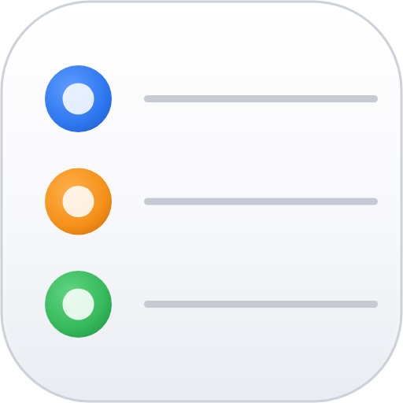
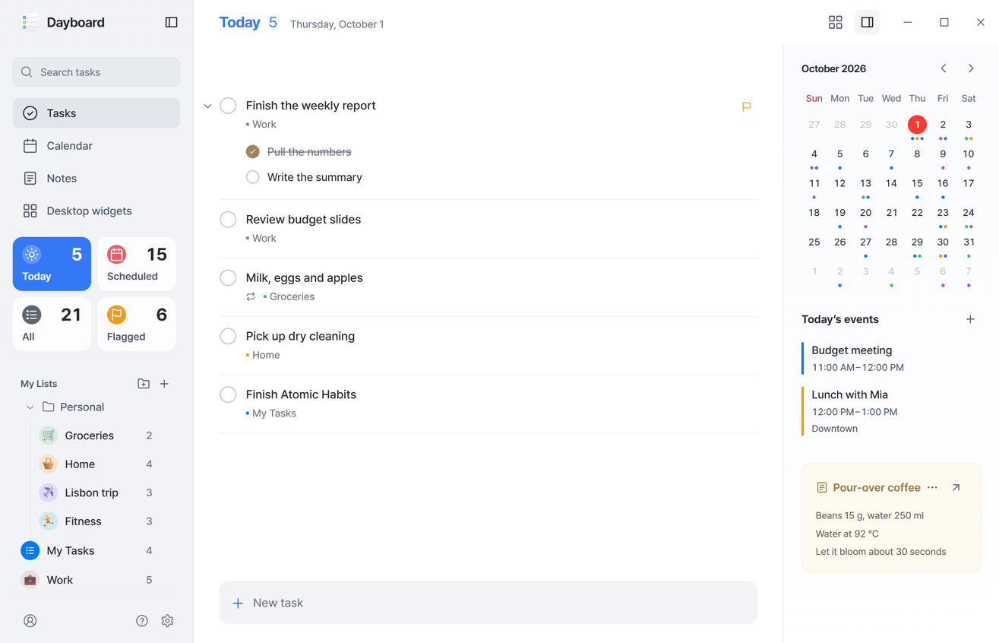
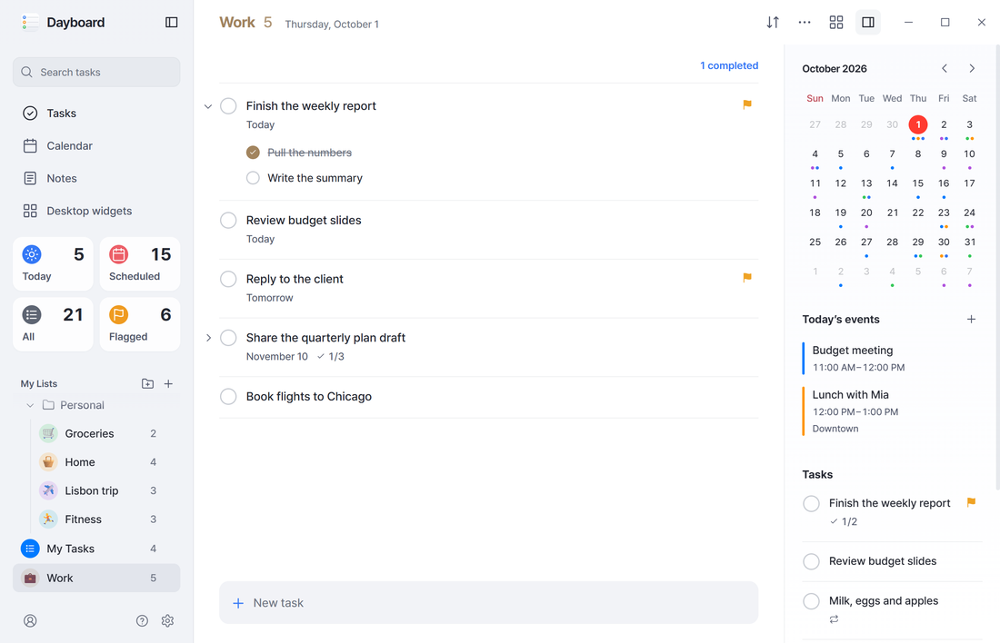
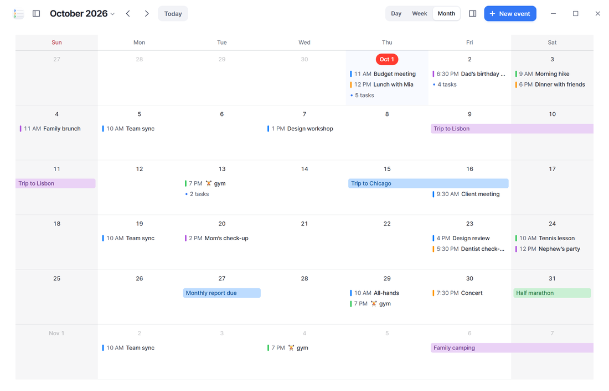
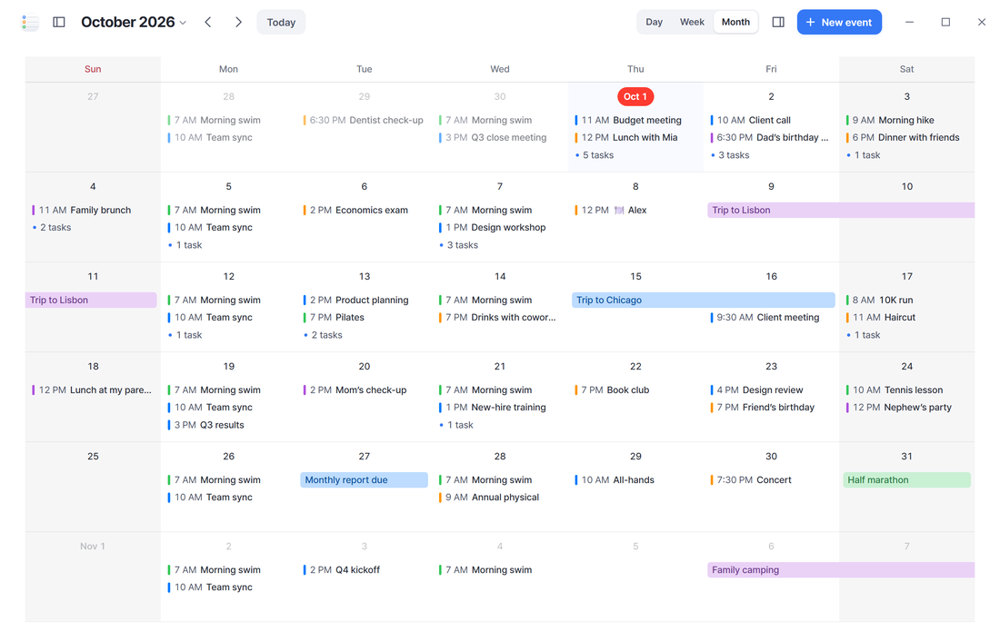
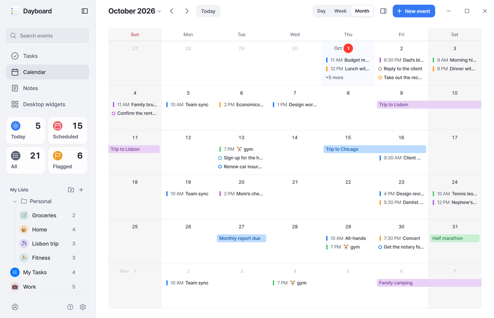
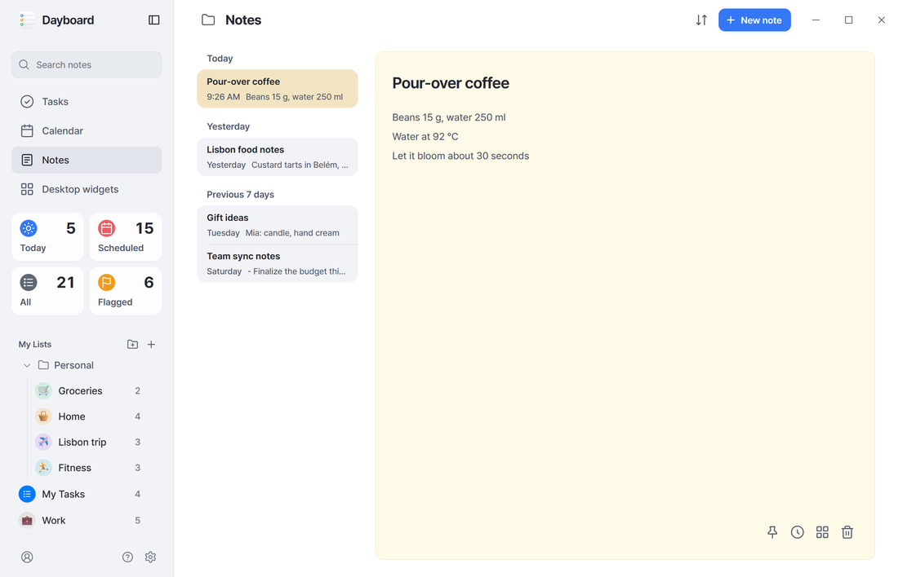
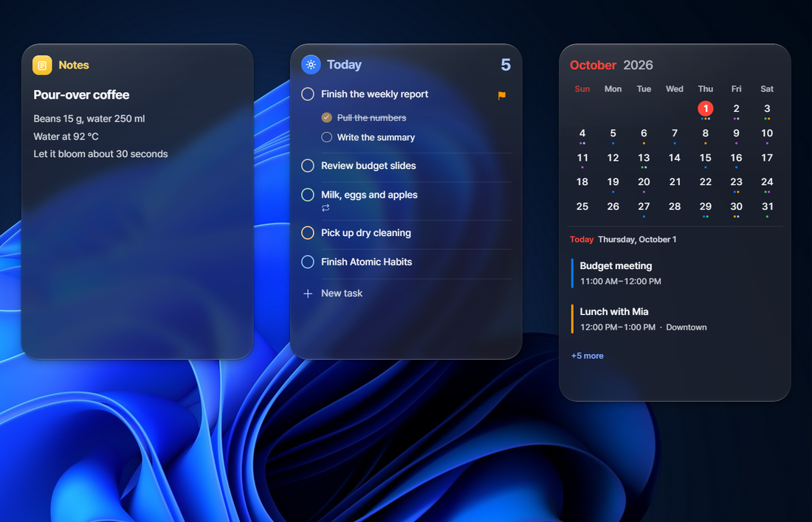

Dayboard
Your tasks and calendar on one board,
at a glance. For Windows.
A clean, Mac- and iPhone-style look for everything on your plate today.

Tasks: nothing slips through
Write it down, then tick it off when it's done.
- Give a task a due date and it shows up in Today or Scheduled on the left
- Flag the important ones to gather them in Flagged
- Keep separate lists, like Work and Home, and group them when you have many
- Break a task into smaller steps, called subtasks
- Set a reminder to get an alert on time, and repeat the tasks you do every week
- Tasks with a due date show on the calendar too, next to your events

Calendar: just type what's on your mind
No hunting for the day, picking a time or filling in the place. Click New event, type it in one line, and Dayboard works out the date, time and title, then puts it on your calendar. Add the place after a comma.
Oct 6, 2–3pm, Economics exam, Main Hall→ Oct 6, 2:00–3:00 PM · Economics exam · Main Hall
Drag an event to another day, or drag its end to change the time.

Quick events: one word for the plans you repeat
Lunch with a friend, the gym after work: some plans always happen at the same hours. Set up a word once in Settings with its time and icon, and from then on that word is all you need.
lunch Alex→ 🍽️ Alex · 12:00–1:00 PMgym→ 🏋️ gym · 7:00–8:30 PM
Notes: jot it down, find it fast
The Wi-Fi password. The office printer's IP address. You only need them now and then, the sticky note has vanished, and opening a heavy notes app to dig for them takes forever. Dayboard's notes are quick to jot down and one search away. Keep the ones you use most on your desktop as a widget.

Widgets: see it all without opening the app
Pick Desktop widgets on the left to put your tasks, calendar and notes on your desktop. The Liquid Glass-style design lets your wallpaper show through, and you choose how clear it is.

Accounts
Click the person button at the bottom left and add a Microsoft or Google account to keep your tasks and calendars in sync with your phone and other PCs, and your notes between PCs. iCloud connects calendars only. Or use it on this PC alone, no account needed.
Download
Dayboard isn't code-signed yet, so Windows may warn you about the installer or block it.